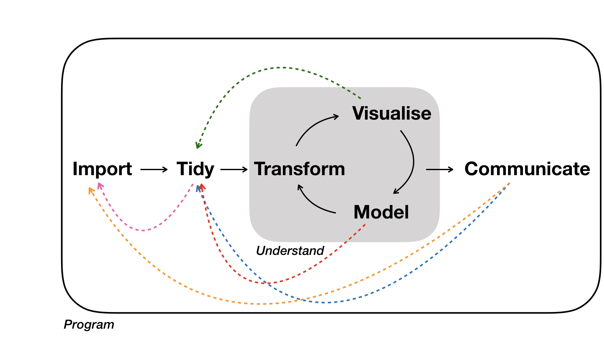
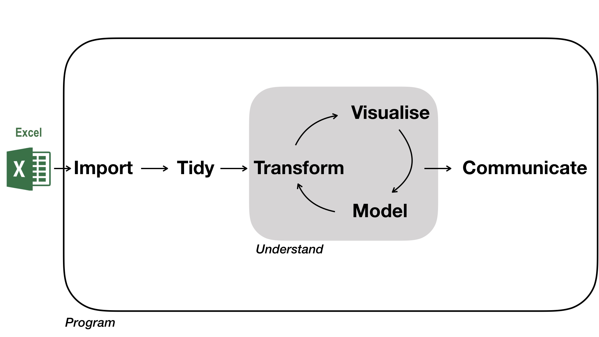

Chapter 1 Data Analysis
Data analysis is a term that describes the process of turning raw data into knowledge. This involves data import, data wrangling, statistical data analysis, and communicating the findings.
Grolemund & Wickham, 2017 presented this as a diagram.

Adapted from R for Data Science by Grolemund & Wickham, 2017.
The diagram makes clear, that the data analysis workflow consists of different modules that depend on the previous one, and that the flow is directional: an entrance, iteration and an exit. It also emphasises that tidy data is important for the analysis, that understanding is an iterative process, and that the analysis is a portable & isolated box. Lastly, communicating/sharing of results is key.
If you would like to further read about the different modules, have a look at the R for Data Science book.
1.1 Data analysis in reality
In reality, data wrangling is rarely a linear process, but instead a back and forth between modules. Therefore, flexibility in moving between these modules with software, along with automation is important. This can be achieved with written programs that can be re-executed at any time.

1.2 Role of Excel
If you have used another tool previously, for example, Excel, then this will still be relevant for data entry & storage.
The article Data Organization in Spreadsheets by Broman & Woo (2018) provides recommendations for organizing spreadsheet data in a way that both humans and computer programs can read.

1.3 Requirements to data analysis software
Apart from moving through modules with ease, what other criteria are important when choosing a data analysis software?
Software should be used by others (otherwise, sharing code becomes difficult), be continuously developed & improved (new data formats, new communication formats), easy to use (high-level language).
1.4 More
If you are interested in the data analysis workflow in general, have a look at the R for Data Science book.
And if you are interested in another formalisation of data analysis have a look at recent work by Hicks & Peng, 2019. Elements & Principles lays out the elements that build a data analysis and the principles in assembling them.